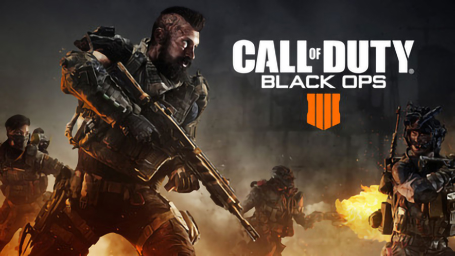
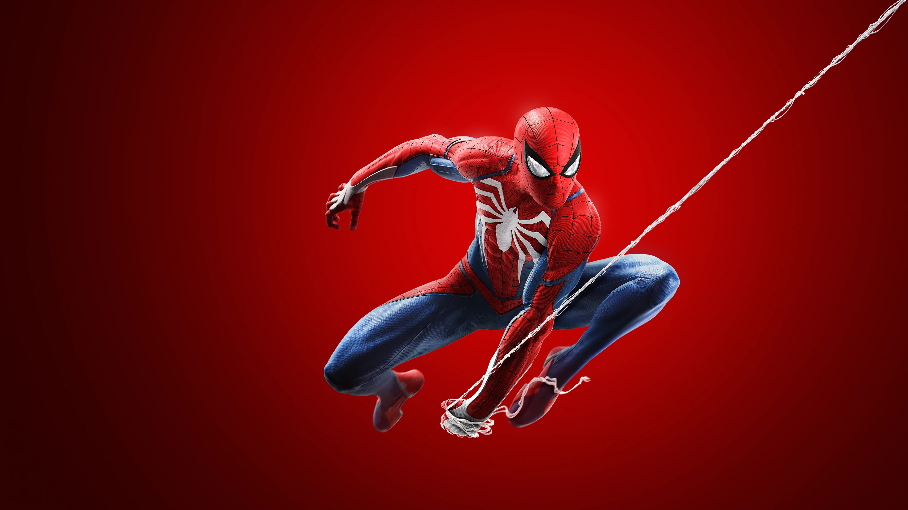
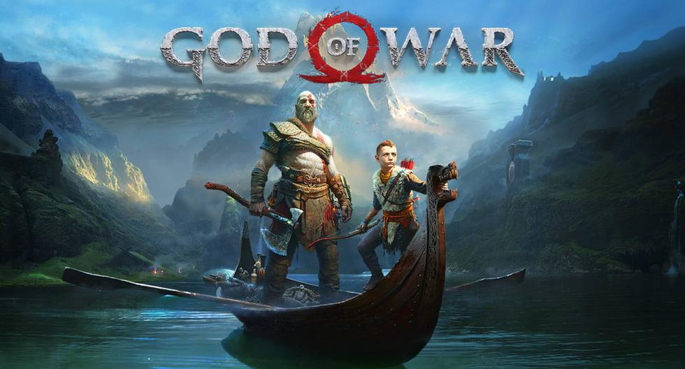

Red dead redemption 2

Red Dead Redemption 2, estilizado Red Dead Redemption II, es un videojuego de acción-aventura western basado en el drama, en un mundo abierto
y en perspectiva de primera y tercera persona, con componentes para un jugador y multijugador. Fue desarrollado por Rockstar Games.
Call of duty
El nuevo call of duty black ops 4 realizado por treyarch, saldrá a la venta el 12 de octubre de 2018
Spiderman Ps4
Marvel's Spider-Man es un videojuego de acción y aventura basado en el popular superhéroe hómonimo de la editorial Marvel Comics.
God of War
God of War, el grán éxito de 2018
The last of us 2

The last of us 2, el juego desarrollado por naughty dog que cuenta una historia de un mundo post-apocalíptico que tendrá su salida en el 2019.